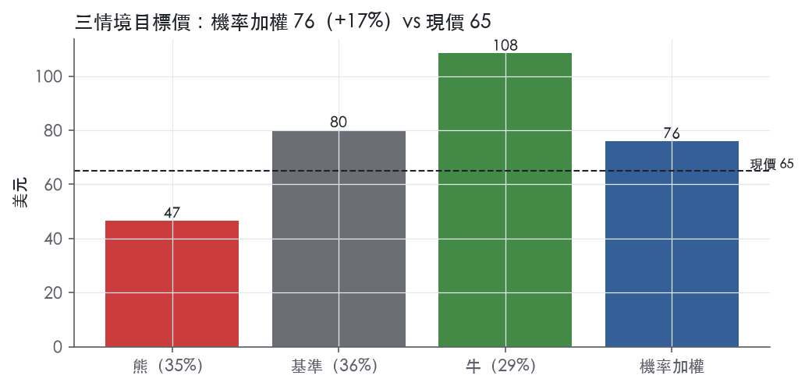
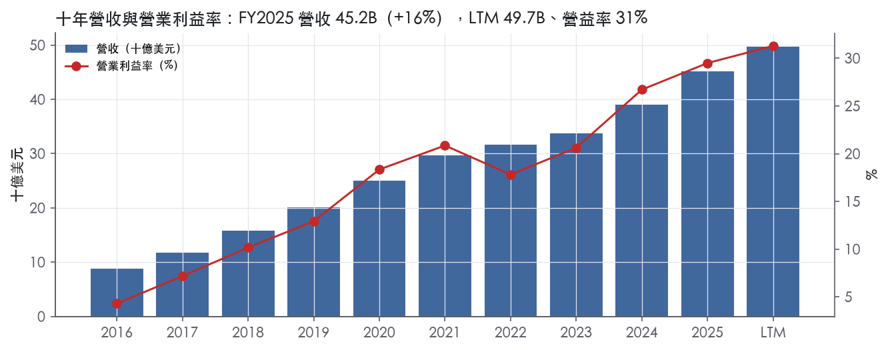
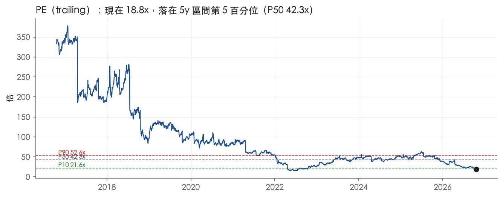
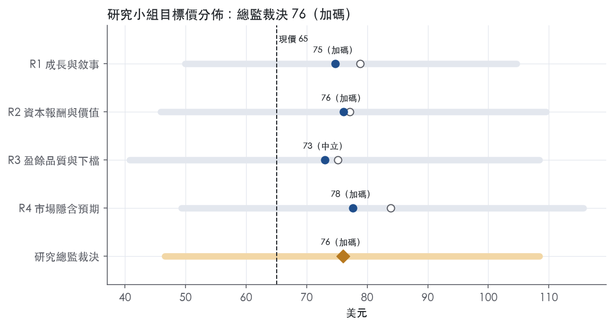
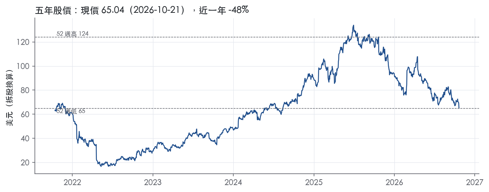

評等總表 › 通訊服務 › NFLX
盈餘照路徑複利、倍數小幅回升，看多｜評等 加碼｜目標價 76
| 報告日 | 評等 | 目標價 | 當時股價 | 超額報酬 |
|---|---|---|---|---|
| 2026-10-21 | 加碼 | 75.98 | 65.04 | +8.8% |
| 2026-10-09 | 買進 | 89.99 | 70.30 | +20.0% |
| 快評 | 動作 | 結論 |
|---|---|---|
| 2026-10-20 | 維持 | 利潤高於預測但屬時點，維持買進 |
| 評等 | 加碼 |
| 12 個月目標價 | 76 美元 |
| 現價 | 65.04 美元（2026-10-21） |
| 預期報酬 | 股價 +16.8%＋股息 0.0%＝總報酬 +16.8%；同業籃門檻 8.0%，超額 +8.8% |
| 估值方法 | P/E 20.0x，套在第 5–8 季的EPS（也就是一年後的未來四季） |
| 三情境 | 熊 47／基準 80／牛 108 |
| 研究流程 | 四位研究員兩輪辯論＋研究總監裁決 |
| 資料來源 | SEC EDGAR XBRL、Tiingo、FRED（全免費） |
盈餘照路徑複利、倍數小幅回升，看多（研究總監裁決，四位研究員兩輪辯論後）
評等 加碼｜12 個月目標價 76 美元（總監三情境機率加權 77 與研究員中位數 75 各半）｜現價 65.04（2026-10-21）
預期報酬：股價 +16.8%＋股息 0.0%＝總報酬 +16.8%。同業籃門檻 8.0%，超額 +8.8%。
估值方法：P/E 20.0x，套在第 5–8 季的EPS（也就是一年後的未來四季）。三情境：熊 47（35%）／基準 80（36%）／牛 108（29%）。
什麼會讓研究總監改變看法：WBD以過橋／定期貸款規模完成（10-Q總債務>30B）則熊情境成為基準、倍數降至15x並轉中性偏空；2027營益率指引低於32%或營收指引為個位數則倍數降至持平18.6x並轉中性。
| 過去四季（實際，FY2026Q3） | 未來四季 | 第 5–8 季 | 第 9–12 季 | |
|---|---|---|---|---|
| 營收（B） | 49.7B | 55.2B | 60.2B | 64.4B |
| 營收成長 | 14.7% | 11.0% | 9.0% | 7.0% |
| 營業利益率 | 31.3% | 31.8% | 32.5% | 33.0% |
| EPS（美元） | 3.46 | 3.50 | 4.00 | 4.46 |
| EPS 成長 | 44.3% | 1.4% | 14.3% | 11.3% |
| 每股股息（美元） | — | 0.00 | 0.00 | 0.00 |
| P/E（現價） | 18.8x | 18.6x | 16.2x | 14.6x |
| 股息殖利率（現價） | — | — | — | — |
過去四季為申報數字；預測為研究總監的假設、程式計算。倍數與殖利率都用現價計算，用來看現價對應各期獲利的高低。
| 項目 | 上次（2026-10-12） | 這次（2026-10-22） | 變動 |
|---|---|---|---|
| 評等 | 買進 | 加碼 | 變動 |
| 機率加權目標價（美元） | 90 | 76 | -15.6% |
| 超額報酬 | 20.0% | 8.8% | -11.2 pp |
| 目標倍數 | 23x | 20x | — |
| 未來四季營收成長 | 11.5% | 11.0% | -0.5 pp |
| 未來四季營益率 | 32.0% | 31.8% | -0.2 pp |
| 未來四季 EPS（美元） | 3.51 | 3.50 | -0.0% |
| 熊／基準／牛機率 | 37／28／35 | 35／36／29 | — |
程式計算；「未來四季」各自從當次報告的資料起點算。研究總監逐點說明見第八章「與上次報告比較」。
| 情境 | 機率（歷史） | 故事 | 未來四季營收成長 | 第 5–8 季營益率 | 倍數 | 目標價 | 股價漲跌 |
|---|---|---|---|---|---|---|---|
| 熊 | 35%（33%） | 風險表第1條WBD以過橋／定期貸款規模完成、買回停止；第2條成長跌破一成、廣告續落後；第4條固定內容成本致營益率回落至28% | 8.0% | 28.0% | 15.0x | 47 | -28.4% |
| 基準 | 36%（37%） | WBD未以過橋規模完成：審查中或破局付終止費（由股數假設吸收），懸念折價只部分回收；2027指引營收約10%、營益率約32.5%，市場回收部分降速折價 | 11.0% | 32.5% | 20.0x | 80 | 23.1% |
| 牛 | 29%（31%） | 2027指引雙位數成長與≥33%營益率、廣告2027-03 12國如期上線、WBD以不增大額債務方式解除，倍數回到前瞻帶P10之上 | 12.0% | 34.0% | 25.0x | 108 | 66.8% |
目標價由程式依研究總監的驅動與倍數計算；機率由研究總監給定。括號內是歷史頻率：把這檔股票過去十年 12 個月報酬的波動形狀，置中在基準情境，結果落在各情境附近的比例。

四位研究員用不同方法各自估值，回應研究總監的質疑後交出第二輪，最後由總監逐點裁決。各研究員的主張見第七章，裁決理由見第八章，完整論證見《研究底稿》。
| 立場（一輪→二輪） | 加權目標價（一輪→二輪） | 評等（一輪→二輪） | 第二輪倍數 | 熊～牛目標價 | |
|---|---|---|---|---|---|
| R1 成長與敘事 | 看多→看多 | 79→75 | 加碼→加碼 | 22.0x | 50～105 |
| R2 資本報酬與價值 | 看多→看多 | 77→76 | 加碼→加碼 | 23.0x | 46～110 |
| R3 盈餘品質與下檔 | 看多→看多 | 75→73 | 加碼→中立 | 19.0x | 41～108 |
| R4 市場隱含預期 | 看多→看多 | 84→78 | 買進→加碼 | 19.0x | 49～116 |
| 研究總監裁決 | 看多 | 76 | 加碼 | 20.0x | 47～108 |
目標價由程式依各自的驅動與倍數計算；評等＝機率加權總報酬 − 同業籃門檻。
Netflix 是一家全球性的訂閱制娛樂服務商，提供電視劇、電影、遊戲與直播節目，會員可隨時播放、暫停、續看，並可隨時更改方案¹。公司核心策略是在營業利益率目標的約束下，在全球持續擴大業務規模¹。營收主要來自向會員收取的每月會員費¹。這是一門用內容投資換會員黏著、再用會員規模換定價權與廣告議價力的生意。公司將自己定位為對抗「消費者閒暇時間」的娛樂選項之一，競爭對手橫跨線性電視、串流業者、遊戲平台、UGC 內容平台乃至社群媒體，公司將贏得這些「決定看什麼的瞬間」稱為「winning moments of truth」¹。FY2025 營收 45.18B 美元、年增 15.9%，營業利益率 29.5%，EBITDA 13.66B 美元（／／／），規模與獲利能力都已是產業內數一數二。
Netflix 目前只揭露「一個」營運分部，公司明確表示「We operate as one operating segment」，營收主要來自串流內容的月費會員服務¹。換句話說，10-K 不提供依地區或產品線（訂閱 vs. 廣告 vs. 遊戲）拆分的毛利率或營益率數據，分部層級的財務細節只能看財報附註第 13 條「Segment and Geographic Information」，10-K 本文未揭露。從業務內容看，公司明確表示已把娛樂影音版圖擴張到遊戲與直播節目（We expanded our entertainment video offering to include games and live programming）¹，並持續擴大消費者商品與實體體驗（live experiences）的布局¹。在廣告業務上，公司自承「We have limited experience and operating history offering advertising on our service」，顯示廣告仍是相對新、仍在爬坡的獲利引擎¹。2026 年新聞稿補充：公司預期 2026 全年廣告營收約 2.7B 美元，低於先前展望的約 3B 美元，原因是部分廣告產品功能上線時程略慢於預期²；直播節目方面，公司在 2026 年的內容支出占比預估僅超過 5%，觀看時數占比卻只約 1%，但過去五年前十大會員新增單日裡有六天是直播節目帶動的³，顯示直播是低投入、高獲客效率的分部型態。整體看，Netflix 的「分部」本質上是單一串流平台上的多元內容形式（原創劇集／電影／遊戲／直播／第三方授權內容）疊加訂閱與廣告兩種貨幣化模式。
客戶是全球訂閱付費會員，公司稱其觸及的受眾「approaching one billion people」²。地區揭露上，10-K 本文未按地區拆收入數字，但 8-K 財測簡報有按四大區域（UCAN、EMEA、LATAM、APAC）揭露營運動態：2026年Q2 單季 EMEA 營收已超過 4.0B 美元，LATAM 與 APAC 皆超過 1.5B 美元，UCAN 當季營收成長 10%（反映新一輪漲價僅部分計入該季）³；Q3 India 業務營收以匯率中性基礎年增約 18%，並創下印度史上最大單季付費淨增人數²，顯示新興市場是近期成長的主要貢獻地區。通路上，公司高度依賴第三方裝置與電信、有線、衛星業者合作上架服務，部分合作夥伴甚至代收會員費，合約效期通常 1 至 3 年¹。付費通路也仰賴信用卡、簽帳卡、禮品卡、電信直接代收等多元金流方式¹。近期通路創新還包括與法國 TF1 的內容整合授權、與 Flipkart 在印度的交易型忠誠綁定方案，都是把第三方內容與通路嵌入既有訂閱介面、藉以提高單一服務的黏著度與獲客效率的做法²。
過去四季（FY2025Q4 至 FY2026Q3）呈現「營收成長放緩、但利潤率顯著走高」的格局。FY2025Q4 營收 12.05B 美元、年增 17.6%，營業利益率 24.5%（／）；FY2026Q1 營收 12.25B 美元、年增 16.2%，營業利益率跳升至 32.3%（／）。FY2026Q2 revenue 成長 13%（匯率中性 12%）至 12.6B 美元，營業利益率 33%，公司稱均「in-line with guidance」³，同時將全年營收展望收斂至 51.0–51.4B 美元、維持 31.5% 營業利益率展望不變³。FY2026Q3 revenue 年增 12%（匯率中性 11%）至 12.9B 美元，「consistent with our forecast」，營業利益率 34.6%，較去年同期 28.2% 大幅提升，且優於財測，主因是費用認列時點²；單季稀釋 EPS 0.87 美元，年增 49%²。展望 Q4，公司預期營收 13.4B 美元、年增 12%（匯率中性 11%），但營業利益率財測下修至 26.0%，內含約 120 個基點因近期裁員而產生的負面影響²；全年 2026 展望為營收 51.1B 美元（年增 13%）、營業利益率 31.5%，較前次財測中點略低 0.2%，原因是廣告營收展望下修（約 2.7B，低於先前約 3B），但訂閱營收成長優於預期部分抵銷²。FCF 方面，LTM FCF 達 11.38B 美元，但單季波動大，FY2026Q2 FCF 僅 1.53B 美元，FY2026Q3 回升至 2.88B 美元（／）。
公司將自己的使命定義為「entertain the world while building a wildly successful business」，策略核心是投資能引發話題、帶來新會員、讓服務變成「must-have」的差異化原創內容，並搭配廣泛的第三方節目、優質探索體驗與全球發行能力²。三大執行重點是：(1) 為會員提供更多娛樂價值、(2) 用技術改善服務的每個環節、(3) 提升貨幣化能力，三者共同驅動獲客與留存、創造可支撐偶爾漲價的會員價值，並提高廣告主需求³。公司強調串流劇集、電影與直播活動（以訂閱與廣告雙軌貨幣化）是「業務引擎」，佔絕大部分支出與幾乎全部營收，且擁有「long runway of growth」²。具體成長引擎包括：持續擴大第三方授權內容與新型態合作（如 TF1、Disney 片庫授權）、把廣告分級擴展至 2027 年新增 15 國、加碼直播賽事（NFL、拳擊）、以及運用生成式 AI 強化個人化推薦、搜尋與內容製作效率²³。公司也點名非英語內容是全球化增長的關鍵，目前已占總觀看時數逾三分之一，十年前占比不到一成²。
就我方判斷，Netflix 目前的敘事已從「會員數增長」轉為「ARM（每會員平均營收）與營業利益率擴張」驅動獲利，這從近四季營收成長率逐季遞減（17.6%→16.2%→13.4%→11.8%）但營業利益率逐季墊高可印證。廣告業務執行進度不如原先財測（2026 展望下修至 2.7B）是目前最明確的「說得到但做得稍慢」的訊號，值得後續追蹤其對長期獲利結構的影響。整體而言，內容全球化＋第三方授權＋直播賽事是三個可辨識、可持續的成長抓手，但 10-K 未揭露分部別財務數字，使外部無法精確驗證各引擎的邊際貢獻。

Netflix 有窄護城河：我們有把握其 ROIC 在未來 5 年以上高於資本成本，但沒有把握撐到 10 年，趨勢正在變寬。護城河的核心是用全球規模攤薄固定內容成本，加上原創 IP 與品牌；會員並沒有被鎖住。
優勢來源只有成本優勢與無形資產兩類；轉換成本、網路效應、效率規模都找不到證據，不列入。
成本優勢（規模攤薄固定內容成本）：公司自承 "our content costs are largely fixed in nature"⁴。同一筆內容支出由全球會員分攤，規模愈大，單位會員成本愈低，後進者難以用同等成本取得同等片庫。營業利益率從十年最低 4.3% 升到最新 29.5%，這是固定成本被營收成長攤薄的直接證據。
無形資產（品牌與原創 IP）：公司表示 "original and exclusive programming can help differentiate our service from other offerings, enhance our brand"⁴。其智慧財產權涵蓋 "the content we produce and distribute through our service, and the consumer products and experiences based thereon"¹。公司也指出 "many of our members rejoin our service or originate from word-of-mouth advertising from existing members"⁴。品牌讓流失會員會回流，也壓低了獲客成本。
排除轉換成本：會員 "can change their plans at any time"¹，而且 "consumers may maintain simultaneous relationships with multiple entertainment sources"¹。退訂幾乎沒有成本，這是我們不給寬評級的主因。
數字支持「ROIC 長期高於資本成本」，但不支持「利潤率穩定」，所以評級停在窄、不上調到寬。ROIC 有資料的 9 年中，9 年都高於 9.0% 的資本成本代理值；十年平均 22.2%，最低 14.2%，平均超額報酬 13.2%。單看這段紀錄，已達寬護城河的門檻。
第一個衝突在穩定度：ROIC 標準差 7.0%、營業利益率標準差 7.8%、毛利率標準差 5.6%。這些波動主要來自單向上升，不是來回震盪。上升趨勢是加分，但也表示最新 36.7% 的 ROIC就是十年最高點，不能直接外推成穩態水準。
更大的衝突在現金：FCF 利潤率十年平均只有 0.3%，最低 -18.1%，標準差 15.6%。FY2016 與 FY2019 的 FCF 分別為 -1.58B 與 -3.14B 美元（／），FY2021 仍是 -0.13B 美元。會計 ROIC 反映的是內容攤銷後的報酬，現金回收長期落後於它，直到 FY2023 FCF 6.93B 美元之後才穩定轉正。現金報酬的高檔紀錄太短，這是我們不願給 10 年把握的數字理由。
最大威脅有兩個：內容供給端被切斷，以及成長放緩讓固定成本反噬；其次是零轉換成本下的需求替代。
目標倍數應相對串流與傳統媒體同業溢價，但超額報酬的延續期要依窄護城河的定義設定，不宜照寬護城河假設永續高報酬。目前 P/E 18.8x 位於 5 年分位 4.6%，遠低於 5 年中位數 42.3x（band.pe 現值與分位），市場已經在為成長放緩折價。溢價的依據是 ROIC 長期維持超額報酬、利潤率仍在擴張；壓抑溢價的是零轉換成本與片源競爭，因此我們建議維持溢價，但幅度應低於歷史中位數水準。
| 指標 | 最新 | 十年平均 | 標準差 | 最低 | 最高 |
|---|---|---|---|---|---|
| ROIC | 36.7% | 22.2% | 7.0% | 14.2% | 36.7% |
| 毛利率 | 48.5% | 39.2% | 5.6% | 29.1% | 48.5% |
| 營業利益率 | 29.5% | 16.8% | 7.8% | 4.3% | 29.5% |
| FCF 利潤率 | 20.9% | 0.3% | 15.6% | -18.1% | 20.9% |
| ROE | 42.8% | 30.4% | 7.4% | 17.9% | 42.8% |
程式計算。資本成本代理值（10 年債＋5%）：9.0%；ROIC 平均減資本成本：13.2%；ROIC 有資料的 9 年中，高於資本成本 9 年。
計分表三項指標亮黃燈：營業現金流／淨利 LTM 0.83x、自由現金流／淨利 LTM 0.77x、應計比率 LTM 4.2%。這三項黃燈同源，都來自 LTM 區間淨利成長快於現金流成長，而非內容投資或收入認列出現異常。槓桿、利息保障、股權酬勞占比、股數變動、股東回饋五項全部亮綠燈，資產負債表本身乾淨。整體判斷為中品質：有紅旗但可解釋，而非「現金長期跟不上盈餘」的低品質情況。
LTM（FY2026Q3）自由現金流 11.38B，對比 LTM GAAP 稀釋 EPS 3.46換算出的淨利基礎，現金轉換率僅 0.83x。拆開季度數字可以看到缺口集中在 FY2026Q1：該季營業利益 3,957M，但淨利高達 5,283M，差額 1,326M 完全發生在營業利益線以下²。同一季 CFO 5,290M、FCF 5,094M（8-K 2026-10-20），現金流其實與營業利益增速一致，真正偏離的是「淨利」這個分母，而不是現金這個分子。換句話說，不是盈餘品質惡化，而是淨利裡混入了一筆不產生現金的業外項目，拉高了淨利基礎、壓低了現金轉換倍數；本資料包未揭露該業外項目的具體性質，無法進一步核實其永久性或一次性。往後三季（Q2、Q3'26）淨利與營業利益的落差明顯收斂：Q3'26 營業利益 4,459M、淨利 3,664M，淨利反而低於營業利益（8-K 2026-10-20），顯示 Q1 的缺口未重複發生²。十年平均的 CFO／淨利 -1.03x、FCF／淨利 -1.20x 看起來更差，但這是 FY2016–FY2019 內容投資高峰期的歷史殘留——那幾年 CFO 分別為 -1.47B、-1.79B、-2.68B、-2.89B（資料包年度表），屬於商業模式轉型期的結構性現金流出，與當前成熟期的現金狀況無關。近三年平均 CFO／淨利 1.04x、FCF／淨利 0.98x 才是較能代表現狀的區間，兩者都貼近或超過 1x。
這份新聞稿沒有提供傳統意義的非 GAAP 調整表（剔除 SBC、攤銷、重組費用等），所有財務指標都是 GAAP 口徑²。唯一明確揭露的「調整項」是裁員相關費用，但公司選擇把它留在 GAAP 數字裡而非剔除：Q4'26 營業利益率預估 26.0%，其中包含「約 120 個基點」來自近期裁員的負面影響²；全年 2026 營業利益率預估 31.5%，其中包含「約 30 個基點」來自 Q4 裁員的負面影響²。這代表公司把重組成本視為真實、該年認列的現金成本，而不是「一次性、不代表核心獲利能力」而加回的項目。這是正面訊號：管理層沒有用非 GAAP 語言替盈餘化妝，GAAP 數字已經是相對乾淨的基礎。股權酬勞（SBC）本系統不加回，LTM SBC／營收僅 1.1%、十年平均 1.5%，對營收與淨利的稀釋程度本來就低，不是本案的盈餘品質風險來源。
槓桿極輕，淨負債／EBITDA LTM 僅 0.43x，遠低於紅線 3.00x，也低於近三年平均 0.66x 與十年平均 2.24x，顯示公司持續去槓桿。十年平均偏高是因為早期（FY2016 淨負債 1.90B、FY2017 3.68B 等，資料包年度表）EBITDA 基期低所致，不是當前風險。利息保障倍數 LTM 18.2x，遠高於綠燈門檻 8.00x，付息能力無虞。快照上淨負債 6.91B、EV 273.98B，槓桿對估值倍數幾乎沒有限制作用。資本配置上，公司用大量回購而非股利回饋股東：股息率顯示「—」（trailing 倍數表），稀釋股數持續下降，LTM 年變動 -1.6%、近三年平均 -1.3%（量化底稁）；對照 8-K 季度表，完全稀釋股數從 Q3'25 的 4,340M 降到 Q3'26 的 4,195M（8-K 2026-10-20），一年內減少超過 100M 股，驗證回購力度²。（股利＋回購）／淨利 LTM 87.1%、近三年平均 88.9%，接近但未超過 100%，代表股東回饋大致以當期盈餘支應，沒有明顯舉債發股利回饋的訊號。
營業現金流／淨利 LTM 0.83x（黃燈）：可解釋為一次性業外項目推高了 FY2026Q1 淨利基礎（營業利益 3,957M vs 淨利 5,283M，8-K 2026-10-20），後續季度缺口已收斂，近三年平均已回到 1.04x，判定為會計口徑／時間點造成的假警報，非真實現金問題。
自由現金流／淨利 LTM 0.77x（黃燈）：同一根源，LTM 分母被業外項目放大，而非資本支出暴增侵蝕現金——FY2025 資本支出／營收僅 1.5%（資料包年度表），維持低資本密集特性，判定為假警報。
應計比率 LTM 4.2%（黃燈）：應計比率正值走高同樣對應 Q1'26 淨利高於現金流的那筆業外收益（8-K 2026-10-20），但近三年平均僅 0.1%，遠低於紅線 5.0%，顯示這不是系統性地靠應計堆高盈餘，而是單季事件被 LTM 窗口放大，判定可解釋、非結構性惡化。
十年平均偏弱（CFO／淨利 -1.03x、FCF／淨利 -1.20x、應計比率 7.3%）：全部來自 FY2016–FY2019 內容投資擴張期的歷史現金流出（資料包年度表 CFO 分別為負），與現在的成熟期現金生成能力無關，不構成現在的盈餘品質疑慮。
其餘五項綠燈（SBC、槓桿、利息保障、股數變動、股東回饋）：均在安全區間內，無需額外解釋。
估值應以 GAAP 數字為主要基礎，因為公司本身沒有提供非 GAAP 調整表、也把重組費用留在 GAAP 利益表裡，GAAP 盈餘已經相對乾淨。但 LTM 單季淨利受業外項目干擾、現金轉換率暫時低於 1x，建議估值時以近三年平均的現金流／淨利比例（約 1.0x）而非最新一季財報新聞稿的淨利數字作為盈餘品質校正基礎，對 LTM EPS 的業外波動部分做小幅折價。槓桿極輕（淨負債／EBITDA 0.43x）且利息保障倍數高，不構成限制估值倍數的理由，股東回饋力度大（回購使稀釋股數持續下降）則支撐每股價值，倍數可用 GAAP 基礎的 P/E／EV-EBITDA 直接比較歷史區間，不需因盈餘品質而額外壓低。
| 項目 | LTM | 近三年 | 十年 | 燈號 | 規則 |
|---|---|---|---|---|---|
| 營業現金流／淨利 | 0.83x | 1.04x | -1.03x | 黃 | ≥1.00x 綠、<0.80x 紅 |
| 自由現金流／淨利 | 0.77x | 0.98x | -1.20x | 黃 | ≥0.90x 綠、<0.60x 紅 |
| 應計比率（(淨利−CFO)／平均總資產） | 4.2% | 0.1% | 7.3% | 黃 | ≤0.0% 綠、>5.0% 紅 |
| SBC／營收 | 1.1% | 0.8% | 1.5% | 綠 | ≤3.0% 綠、>8.0% 紅 |
| 淨負債／EBITDA | 0.43x | 0.66x | 2.24x | 綠 | ≤1.50x 綠、>3.00x 紅 |
| 利息保障倍數（營業利益／利息） | 18.2x | 13.9x | 7.77x | 綠 | ≥8.00x 綠、<3.00x 紅 |
| 稀釋股數年變動 | -1.6% | -1.3% | -0.1% | 綠 | ≤0.0% 綠、>3.0% 紅 |
| （股利＋回購）／淨利 | 87.1% | 88.9% | 69.6% | 綠 | ≥50.0% 綠、<0.0% 紅 |
程式計算；燈號以 LTM（無則近三年平均）判定。
| 風險 | 觸發指標（看什麼數字、在哪裡看） | 對 EPS 的影響方向與粗略幅度 | 未來 12 個月發生機率（高／中／低） | 出處 |
|---|---|---|---|---|
| WBD 併購案的融資與整合風險 | 併購是否完成公告、是否動用 42.2B 美元過橋貸款／20B 美元定期貸款／5B 美元循環信用額度、交易完成後淨負債水位（下一份 10-Q 資產負債表） | 負向，大；若交易破局需付 5.8B 美元終止費⁴，若完成則利息費用大增侵蝕 EPS | 中 | 10-K 年報 FY2025 Item 1A（風險因素） |
| 廣告與訂閱營收成長放緩，營益率展望下修 | 季度營收年增率（已連四季下滑：17.6%→16.2%→13.4%→11.8%→Q4財測11.5%）、全年廣告營收實際數 vs. 2.7B 財測² | 負向，中；Q4 營益率財測已從原本軌跡下修至 26.0%，含約120bp裁員負面影響² | 高 | 8-K 財報新聞稿（2026-10-20） |
| 好萊塢工會團體協約到期引發停工 | WGA 協議 2026-05-01 到期、SAG-AFTRA 與 DGA 協議 2026-06-30 到期⁴；是否出現罷工公告 | 負向，中；內容製作延遲會拉長攤銷週期、影響發片節奏 | 中 | 10-K 年報 FY2025 Item 1A（風險因素） |
| 內容授權成本上升、關鍵版權流失 | 片商／內容商是否續約、公司是否在財報揭露版權到期不續的具體標的（10-K／8-K 揭露） | 負向，中；內容成本是「largely fixed cost」⁴，若會員成長不如預期但內容成本固定，利潤率受壓 | 中 | 10-K 年報 FY2025 Item 1A（風險因素） |
| 網路安全事件／資料外洩 | 是否有重大資料外洩公告、是否觸發各國監管機關通報義務（GDPR／州檢察總長） | 負向，中至大（不可預先量化）；公司明言「we do not carry insurance」against 資料外洩相關費用⁴ | 低 | 10-K 年報 FY2025 Item 1A（風險因素） |
WBD 併購案是目前最大、也最新的風險來源。公司為此取得最高 42.2B 美元的無擔保過橋貸款承諾，並另外簽訂 5B 美元循環信用額度與 20B 美元延遲動用定期貸款⁴，這將使 Netflix 現有的 14.5B 美元優先票據（約當值）規模大幅跳增⁴。公司自承交易須取得必要政府與監管核准，若條件未能滿足，交易可能延遲或無法完成，且在特定情況下 Netflix 須支付 5.8B 美元的終止費⁴；即使完成，監管機關也可能要求資產剝離或限制 WBD 串流與製片業務的經營方式，進而降低交易預期效益或造成重大不利影響⁴。即便順利完成，整合失敗、未能實現預期綜效、管理層注意力分散都是公司自己列出的具體風險⁴。鑑於交易規模遠大於公司目前 273.98B 美元的企業價值的一個量級分支，這是未來一年對股價影響最大的單一事件。
營收成長放緩與廣告爬坡不如預期是最確定、也最快能被驗證的風險。公司近四季營收年增率已從 17.6%降至 11.8%，Q4 財測為 11.5%²，呈現明確的減速軌跡。更關鍵的是廣告業務執行不如原先財測：公司將 2026 全年廣告營收展望從約 3B 美元下修至約 2.7B 美元，原因是「部分廣告產品功能上線時程略慢於預期」²。這直接拖累全年營收展望下修 0.2 個百分點（雖由訂閱營收優於預期部分抵銷）²。同時 Q4 營益率財測被下修至 26.0%，其中包含約 120 個基點的裁員負面衝擊，全年營益率展望中也含約 30 個基點的裁員負面衝擊²。這代表管理層自己承認獲利展望正在被下修，而非外部推測。
工會團體協約到期是可精確監測、時間點明確的風險。WGA 協議將於 2026 年 5 月 1 日到期，SAG-AFTRA 與 DGA 協議均於 2026 年 6 月 30 日到期⁴。公司明白表示若協議無法續約，相關工會過去曾發動罷工或停工，未來也可能再度發生，進而導致製作暫停、新內容延遲上架⁴。考量到 Netflix 的內容成本是長年期、largely fixed cost 性質⁴，若會員成長不如預期，但內容支出無法同步調整，利潤率將承壓，這一風險與前述廣告／訂閱成長放緩是同一本質的問題：收入端彈性遠低於成本端。
內容授權成本與版權流失風險是公司商業模式的結構性弱點。公司明言若片商、內容商或其他版權方不願意以可接受條件授權（尤其當內容商自己發展串流服務後），Netflix 取得內容能力將受限，成本可能進一步墊高⁴。部分授權合約允許版權方相對快速撤回內容，意味著片單可能在短期內被迫調整⁴。這一風險難以用單一財報數字監測，但可觀察的替代指標是：公司是否在財報電話會議或 8-K 中揭露重大版權合約未續約（例如迪士尼授權、TF1 合作等新聞稿常態揭露的授權動態）。
網路安全與資料外洩風險是典型的尾端風險，機率低但一旦發生衝擊大且不可提前精確估計。公司自承過去曾發生數位內容資產未經授權外洩、會員個資意外揭露的事件，但「to date these unauthorized releases have not had a material impact」⁴。公司明確表示「we do not carry insurance to cover expenses related to such disruptions or unauthorized access」，也「we currently do not carry insurance against the risk of a data breach」⁴，一旦真的發生重大外洩，修復成本、監管罰款與聲譽損失將完全由公司自行吸收，沒有保險緩衝。
營益率擴張已逼近歷史天花板，若再靠裁員支撐邊際利潤率，可能傷害內容產製與工程團隊的執行力。 近四季營益率從 24.5% 一路墊高到 34.6%（至 FY2026Q3），而 Q4 財測中明確寫入裁員帶來的 120 個基點正面提振（即裁員降低成本）²。10-K 本身未將「透過裁員維持利潤率擴張」列為風險因子，但這種做法若持續，可能在下一輪內容大年或 WBD 整合期削弱組織執行力，公司並未在風險章節中揭露這層因果關係。
三項巨型財務承諾（WBD 過橋貸款上限 42.2B 美元、現有優先票據 14.5B 美元、以及尚未認列為負債的串流內容承諾）同時存在，流動性壓力測試應以三者疊加情境檢視，而非個別看待。 10-K 將「substantial indebtedness」與「WBD transaction financing」分列為兩條獨立風險⁴，但未提供兩者疊加後對利息覆蓋率、自由現金流緩衝的綜合情境分析，這是投資人需自行建模補強的缺口。
現價 65.04 對應 trailing（過去四季）P/E 18.8x、EV/EBITDA 17.2x、EV/EBITA —、EV/Sales 5.5x、FCF 殖利率 4.3%。主要估值倍數 P/E 現在 18.8x，落在5 年區間第 5 百分位（P10／P50／P90 = 21.6x／42.3x／52.6x）。

把程式的機械基準預測放到現價下，市場付的前瞻倍數是：P/E（未來四季） 18.6x、P/E（第 5–8 季） 16.4x。反推 DCF 顯示市價隱含未來五年營收年成長 6.6%（WACC 9.0%、終值成長 3.0%、FCF 利潤率 26.2%，SBC 不加回）。
| 倍數 | 現在 | 5 年 P10 | 5 年 P50 | 5 年 P90 | 現在分位 | 全期 P50 |
|---|---|---|---|---|---|---|
| P/E | 18.8x | 21.6x | 42.3x | 52.6x | 4.6% | 59.2x |
| EV/EBITDA | 17.5x | 19.4x | 32.4x | 42.5x | 5.9% | 40.9x |
| EV/EBITA | 45.1x | — | — | — | — | 55.2x |
| EV/EBIT | 18.0x | 20.3x | 34.1x | 43.8x | 5.2% | 43.5x |
| EV/Sales | 5.6x | 3.9x | 7.7x | 12.0x | 24.4% | 8.7x |
| P/S | 5.5x | 3.6x | 7.5x | 11.9x | 25.0% | 8.4x |
| P/FCF | 24.0x | 31.9x | 50.8x | 631.0x | 0.0% | 60.4x |
trailing 倍數（股價 ÷ 過去四季）；分位以每個交易日計算。
同業籃：IQ, CNVS（SIC 7841 同業 3 家中，CY2025 營收最接近的 2 家）。評等門檻 —：同業「倍數不變下持有一年」的隱含報酬中位數（＝ FCF 殖利率 ×(1＋g)＋g，g 為 5 年營收年複合成長並夾在 −2%～8%），每家夾在 0～15%、P/E 低於 5 倍視為資料可疑而排除，中位數再限制在 10 年債到 10 年債＋5% 之間；排除：IQ（隱含報酬算不出來）、CNVS（隱含報酬算不出來）。
| 代號 | 市值 | 5 年營收 CAGR | 營益率 | ROIC | P/E | 5 年 P/E 中位數 | EV/EBITDA | P/FCF | 隱含報酬 |
|---|---|---|---|---|---|---|---|---|---|
| NFLX | 267.1B | 12.6% | 31.3% | 36.7% | 18.8x | 42.3x | 17.2x | 23.5x | 12.6% |
| IQ | — | -33.4% | — | 0.5% | — | — | — | — | — |
| CNVS | 0.0B | 15.9% | -19.5% | -30.4% | — | — | — | — | — |
| 同業中位數 | -8.7% | -19.5% | -14.9% | — | — | — | — | — |
全部 trailing，程式以各公司 SEC XBRL 與 Tiingo 行情計算；第一列為本檔。
事後實現前瞻倍數帶（P/E，2018-11-19..2025-11-17）：P10／P50／P90 = 23.1x／38.7x／60.5x。它是每個交易日的股價除以之後四季實際實現的指標；一年後，今天的第 5–8 季正是那時的未來四季，所以這條帶是 12 個月目標價的同口徑倍數。因為用的是事後實際而非當時預期，過去成長超乎預期的公司這條帶會偏低。
程式的機械基準（成長率從過去四季年增率三年收斂到 6%、利潤率持平）用 事後實現前瞻 P/E P50 估值得到 153（135.1%），市場現行前瞻倍數（現價 ÷ 基準 未來四季指標）一年後持平，套在基準 第 5–8 季指標得到 74。這兩個數字只是參考點，不是本報告的目標價；研究員對這個定價的回應在第七章。
下表是每位研究員第一輪（各自獨立）與第二輪（回應研究總監的質疑後）的結果。目標價全由程式依各自的假設計算。
| 立場（一輪→二輪） | 加權目標價（一輪→二輪） | 評等（一輪→二輪） | 第二輪倍數 | 熊～牛目標價 | |
|---|---|---|---|---|---|
| R1 成長與敘事 | 看多→看多 | 79→75 | 加碼→加碼 | 22.0x | 50～105 |
| R2 資本報酬與價值 | 看多→看多 | 77→76 | 加碼→加碼 | 23.0x | 46～110 |
| R3 盈餘品質與下檔 | 看多→看多 | 75→73 | 加碼→中立 | 19.0x | 41～108 |
| R4 市場隱含預期 | 看多→看多 | 84→78 | 買進→加碼 | 19.0x | 49～116 |
| 研究總監裁決 | 看多 | 76 | 加碼 | 20.0x | 47～108 |
目標價由程式依各自的驅動與倍數計算；評等＝機率加權總報酬 − 同業籃門檻。
分歧度：第一輪 加權目標價 75～84（區間＝現價的 13%）· 倍數 19～23x · 立場 看多×4（方向一致）；第二輪 加權目標價 73～78（區間＝現價的 7%）· 倍數 19～23x · 立場 看多×4（方向一致）。

| 研究員 | 第二輪主張 | 堅持的理由 |
|---|---|---|
| R1 成長與敘事 | 看多，給未來一年EPS 22x，錨在自家五年本益比下緣。 | 第一季業外利得墊高盈餘，乾淨倍數高於18.8x；基準不納入WBD。 |
| R2 資本報酬與價值 | 看多，給未來一年EPS 23x，介於自家五年與三年本益比下緣。 | 扣除業外利得後兩個效果抵銷，倍數不動。 |
| R3 盈餘品質與下檔 | 溫和看多，給第二年EPS 19x，低於過去市場付的前瞻倍數下緣。 | 那條下緣形成於2022年，今天營益率已達31.5%，跑道用掉大半。 |
| R4 市場隱含預期 | 看多，給第二年EPS 19x，略高於市場持平的18.6x。 | 市場折的是WBD併購與成長降速，低估2027年後的營益率。 |
每位研究員的逐條回應與完整論證見《研究底稿》（NFLX_研究底稿_2026-10-22.docx）。
| 分歧點 | R1 成長 | R2 價值 | R3 品質 | R4 預期 | 什麼資料會分出勝負 |
|---|---|---|---|---|---|
| 目標倍數的口徑與水準（multiple） | 22x eps@ntm，錨自家 trailing 5y 帶下緣；乾淨 LTM 倍數高於 18.8x | 23x eps@ntm，5y P10 21.6x–3y P10 25.1x 之間；利得修正後「兩效果抵銷」不動倍數 | 19x eps@q5_q8，前瞻帶 P10 之下：P10 形成於 FY2022 盈餘跑道、今日跑道已用大半＋10 年債 | 19x eps@q5_q8，略高於持平 18.6x；E3 拆解：市場折的是倍數與併購後歸屬，非近一年 EPS | 2027-01 全年指引；WBD 監管結果與交割時程；10-Q 總債務 |
| Q5–Q8 營收成長（rev_growth_y2） | 9.5% | 8.9%（接受基準，列為判斷） | 9.0% | 10.0%（廣告 15 國、印度 +18%） | 2027-01 營收指引；FY2027Q1 營收年增 |
| Q5–Q8 營益率（op_margin_y2，連帶 y1） | 33.0%（y1 32.0%），攤銷 8% 低於營收 | 32.0%（y1 沿用基準 31.3%），片源與直播成本吸收攤薄 | 32.5%（y1 31.8%），每年擴約 0.7pp | 33.0%（y1 32.0%），2026 在攤銷 +10% 下仍擴 2pp | 2027-01 營益率指引；2027 內容攤銷增速財測 |
| 股數年變動（share_change_pct） | −3.4%（基準） | −2.0% | −2.0%：常態 FCF 低於淨利，一次性現金年度不可外推 | −3.4%（基準） | 10-Q 回購金額；WBD 是否凍結回購 |
| 熊情境深度與 WBD 放法 | 9.5/6/5、31/30/30、15x、股數 0%→49.94 | 8/5/4、29/28/28、15x、股數 0%→45.87 | 7/4/3、29/26.5/26.5、14x、股數 −1%→40.77 | 9/6/5、31 持平、14x、股數 0%→49.32 | 交割公告與融資動用；10-Q 總債務是否 >30B；FY2027Q2 營收年增是否跌破 9% |
1. 目標倍數：裁 own，21x eps@q5_q8。 口徑先定：劇本主尺是 q5_q8，事後實現前瞻帶同口徑可直接比較；R1、R2 的 trailing 帶 5y P10 21.6x形成於成長 15% 以上的年份，R2 自己承認扣除 Q1'26 業外利得後 trailing P/E 高於 18.8x、「比 FY2022 更便宜」的論據變弱——他的 23x@ntm 實際上只是乾淨口徑下的倍數持平；R3、R4 的 19x 與市場持平 18.6x 只差 2%（程式檢查表），本質也是持平。同口徑下四人都主張「不重評、只賺盈餘」。我與他們的分歧在一個時間判斷：WBD 交易自 10-K FY2025 Item 1A 揭露到本報告一年後已近兩年，監管結果在 12 個月內出爐的機率高於持續懸置；R4 把「交易仍在審查」、R1 把「未在 12 個月內完成」寫成基準，等於把懸念折價固定在基準裡，但 R4 同時主張市場低估 2027 年後營益率，卻只給 2% 的倍數回升，立場與倍數不一致。我的基準假設懸念以不動用過橋規模的方式解除，折價部分回收。錨仍是上次報告的前瞻帶 P10 23.1x，但從基準降為折扣起點，兩項折扣：(1) R3 的論點有效——P10 形成於 FY2022（成長 6.5%），之後營益率由 17.8%升到 26.7%使分母事後暴增，今日跑道從指引 31.5% 只到 33%，P10 對今天偏樂觀；(2) 8-K 2026-10-20 廣告 2.7B 對原約 3B、Q4 營益率 26.0% 含 120 個基點裁員，第二引擎兌現慢，市場把前瞻倍數從上次報告的 21.5x 壓到 18.6x。利率不採計：R3「10 年債 5.19% 所以不取 P10」、R4「不取 P50 因利率」——現價已反映利率，帶期間利率較低只影響帶的可比性，不是再壓一次倍數的理由；兩人倍數未低於持平點，不構成違規，但我的裁決不含這一項。
2. Q5–Q8 營收成長：裁 R3，9.0%。 季營收年增 17.6%→16.2%→13.4%→11.8%（／FY2026Q1／FY2026Q2／FY2026Q3），Q4 財測 11.5%、匯率中性 11%，2026 全年 13% 含約 1pp 匯率順風²。R4 的 10% 需要廣告在 2027 年接棒，但廣告剛因「產品功能上線慢」下修，15 國上線在 2027 年 3 月、首年貢獻有限；R1 的 9.5% 同理。研究部紀錄顯示四人營收誤差中位數皆偏高 0.3–0.4%，R3 絕對誤差最小（1.5%），他的 9.0% 與基準 8.9% 幾乎相同、來源不同——我取他的判斷值。y1 裁 R2 的 11.0%：Q4 財測 11.5% 可信（Q3 實際 12,874M 對財測 12,860M³,²），但 UCAN 調價自 Q2'26 進入基期、流失率改善只能減緩減速。y3 裁 R2 的 7.0%：廣告 15 國與印度匯率中性 +18%²讓第三年不必回到 FY2022–23 的 6.5%／6.7%（／FY2023），R1、R3 的 8%、R4 的 9% 要求減速在第三年停止，沒有證據。
3. 營益率：裁 R3，y1 31.8%、y2 32.5%、y3 33.0%。 y1 的機制是 Q4'26 財測 26.0% 取代 Q4'25 的 24.5%、2027 前三季與 2026 同期持平——Q3'26 的 34.6%含費用時點紅利，裁員省下的錢「continue to aggressively invest」²，前三季再擴張（R1、R4 的 32.0%）缺乏機制；R2 沿用 LTM 31.3% 則忽略了 Q4 財測已高於去年同期。y2 不取 33.0%：R1 營業利益預測歷史偏高 4.2%，其攤銷增速 8% 低於公司 2026 年約 +10%³沒有來源；R4 的 33% 要在廣告下修、裁員再投資、片源成本上升⁴三個訊號下擴 1.5pp，太快。不取 R2 的 32.0%：他把片源與直播成本視為完全吸收攤薄，但 2026 年 30 個基點裁員費用的基期效應就能給 2027 年約半個百分點。R3 營業利益歷史偏高 4.5%，我把他的 32.5% 視為上限而非中點，故 y3 只到 33.0%。
4. 股數年變動：裁 R2／R3，−2.0%。 FD 股數一年 4,340M→4,195M²發生在含 Q1'26 一次性現金的年度；常態年度 FCF 低於淨利（6.92B 對 8.71B；9.46B 對 10.98B），（股利＋回購）／淨利 87.1%、近三年股數變動 −1.3%（財務體質章）。WBD 無論完成或破局都要現金（去槓桿或 5.8B 終止費⁴）。基準的 −3.4% 是機械沿用含一次性現金的 LTM，R1、R4 未表態，不採。
5. 熊情境：裁 R2。 機制須對應風險表：第 1 條 WBD 以過橋／定期貸款規模完成、買回停止；第 2 條成長跌破一成；第 4 條內容成本「largely fixed」使營益率回落。R2 的 8/5/4、29/28/28 符合「成長降到 FY2022–23 水準、攤銷 +10% 每年壓約 1.5–2pp」的機制；R3 的 26.5% 要求成長崩到 4%／3%，比 FY2022 從 18.8% 到 6.5% 更陡，且公司自 FY2022 後已改為營益率目標約束下擴張（業務概況章），不取；R1、R4 的 31% 持平只是「不擴張」，不是固定成本反噬，熊情境太淺。倍數 15x 低於零報酬倍數 16.4x，代理模型未入的新增利息與槓桿，是個股資本結構因素。
漂移與總經偏離。 逐項核對後無退回：R4 加權 84→78 向中位數靠攏 92%，但五項修正全部對應我的 E1–E5 意見並附 10-K Item 1A、8-K 證據；R1 牛機率 0.30→0.27 對應 G3 轉發的 WBD 條款；R3 熊機率 29%→32% 對應 Q2「兩個結果皆負向」；R2 幾乎未動。drift_rejections 為空。四人 macro_deviations 皆為空，無需裁決；我的假設未用到總經變數——營收依公司財測與季度趨勢，不用非必需消費指引的 GDP 1.7 外推，因公司揭露會員對 2026 調價反應與過往一致、流失率年減²，訂閱平台對 GDP 的傳導不同於實體通路；倍數不因 10 年債 5.19% 壓低。總經敏感度 t 值 −1.6 不可靠，不引用。
與機械基準不同的驅動：
目標倍數 21x，eps@q5_q8。錨：事後實現前瞻 P/E 帶 P10 23.1x（同口徑，不需換算）打折，折扣對應 R3 的跑道論點與廣告／裁員兩筆新資料；高於市場持平倍數 18.6x——這是四人同口徑中唯一主張前瞻倍數實質回升的立場，依據是 WBD 懸念在 12 個月內大概率有結果而非持續懸置；低於 P10，因 P10 對應的盈餘跑道今天已用大半。同業籃無可用倍數（IQ、CNVS 皆無 P/E），門檻為絕對 8%，不做同業相對處理。
機率依據：四位研究員的程式歷史對照落在牛 27–32%／基準 33–44%／熊 29–36%，這檔股票置中分布左尾厚（P10 −56% 對 P90 +36%），歷史上熊區頻率本就不低於牛區；我的熊 33% 對牛 32% 幾乎持平，不是研究部「熊必高於牛」的慣性——快評已判定「調價效應走完」論點削弱、流失率年減且優於預測²、現價已低於帶 P10，下檔有一部分被定價；熊仍略高於牛 1pp 的公司特有理由是 WBD 兩端皆淨負（完成則槓桿驟升、破局則付 5.8B⁴），歷史樣本裡沒有這種二元事件。基準 35% 略高於牛熊，因公司財測紀錄準確。程式結果表會給精確對照，若偏離超過 10pp 我接受向歷史靠。
市場對基準 Q5–Q8 EPS 付 16.4x（零報酬倍數）、對 NTM 付 18.6x，反推 DCF 隱含五年營收成長 6.6%。我們與現價的差距主要在倍數，不在近一年盈餘：R4 的 E3 拆解成立——基準 NTM 營益率 31.3%、成長 11.8% 與公司 2026 指引 31.5%、Q4 財測 11.5% 相近，市場折的是 WBD 懸念與成長降速；其次在 Q5–Q8 營益率（我們 32.5% 對基準 31.3%）。立場看多；程式評等無論落在加碼或買進都與立場一致，因機率加權總報酬在三情境下已高於絕對門檻 8%。
程式檢查發現，總監最初裁決的機率加權目標價 79 落在四位研究員第二輪區間 73～78 之外，可能是逐點選邊的拼湊效應。總監複核後決定修正（最終 77）：基準情境高於四人所有基準，來源是 21x@q5_q8 同口徑下為全組最高倍數，但基準故事寫的是「WBD 審查中或破局」，懸念未解除卻假設折價回收，內部矛盾；同時牛機率 32% 高於四人全部、熊 33% 低於三人，與最高基準同向傾斜。修正：基準倍數降至 20x（仍高於持平 18.6x，只回收與 12 個月內解除機率相稱的部分折價），機率改為牛 29／基準 36／熊 35（熊採熊情境來源 R2 的機率）。營運驅動、牛熊情境來源不變。
自洽檢查。 逐一對照後，營運驅動本身沒有拼湊問題：Q5–Q8 營收 9.0% 與營益率 32.5% 整組取自 R3，背後是同一套「季度趨勢減速＋攤銷 +10% 下有限攤薄」的機制；股數 −2.0% 比基準保守；牛取 R3（四人中第二、三名深度）、熊取 R2（第二深）。問題出在兩處，而且往同一邊傾斜：
結論：基準最高、牛機率最高、熊機率偏低，三者同向——是傾斜，不是四人系統性低估。
修正。
修正後目標價由程式重算，應回到研究員區間內或其上緣；立場仍看多，因三情境加權總報酬預期仍高於 8% 絕對門檻。
現價 65.04 → 點估目標價 80 → 機率加權目標價 77 → 目標價 76，差距拆成五段：成長順延 +9 美元（市場現行倍數 18.6x 一年後持平、獲利照機械基準）；倍數差 +6 美元（總監倍數 20.0x vs 市場持平倍數 18.6x，同一機械基準預測）；盈餘差 +1 美元（總監預測的第 5–8 季EPS 0.0B vs 機械基準 0.0B，同一倍數）；情境不對稱 -4 美元（機率加權減點估）；研究小組平均 -1 美元（總監機率加權 77 與研究員第二輪中位數 75 各半）。各段相加等於目標價減現價。本階段未接賣方共識，差距以市場隱含預期為對照。
| 驅動 | 機械基準 | 研究總監 | 差異 |
|---|---|---|---|
| 未來四季營收成長 | 11.8% | 11.0% | -0.8 pp |
| 第 5–8 季營收成長 | 8.9% | 9.0% | +0.1 pp |
| 第 9–12 季營收成長 | 6.0% | 7.0% | +1.0 pp |
| 未來四季營益率 | 31.3% | 31.8% | +0.5 pp |
| 第 5–8 季營益率 | 31.3% | 32.5% | +1.2 pp |
| 第 9–12 季營益率 | 31.3% | 33.0% | +1.7 pp |
| D&A／營收 | 0.8% | 0.8% | ＝ |
| 資本支出／營收 | 1.9% | 1.9% | ＝ |
| SBC／營收 | 1.1% | 1.1% | ＝ |
| 稅率 | 12.8% | 12.8% | ＝ |
| 股數年變動 | -3.4% | -2.0% | +1.4 pp |
研究總監只寫偏移，未寫的沿用基準。
| 期 | 營收 | 成長 | 營益率 | 營業利益 | EBITDA | EBITA | 淨利 | EPS | FCF | 期末淨負債 |
|---|---|---|---|---|---|---|---|---|---|---|
| 未來四季 | 55.2B | 11.0% | 31.8% | 17.6B | 18.0B | 17.6B | 14.6B | 3.50 | 14.6B | 5.2B |
| 第 5–8 季 | 60.2B | 9.0% | 32.5% | 19.6B | 20.0B | 19.6B | 16.3B | 4.00 | 16.3B | 1.8B |
| 第 9–12 季 | 64.4B | 7.0% | 33.0% | 21.2B | 21.8B | 21.2B | 17.8B | 4.46 | 17.8B | -3.1B |
程式依上表的驅動計算；季度用最近四季季節性分攤；不含營運資金變動。
估值方法：P/E 20.0x，套在第 5–8 季的EPS（也就是一年後的未來四季）。研究總監目標倍數的錨：事後實現前瞻P/E帶P10 23.1x（同口徑）打折：P10形成於FY2022盈餘跑道今已用大半、廣告下修與裁員顯示第二引擎兌現慢、基準含WBD審查中與破局分支故折價僅部分回收；高於市場持平18.6x，因12個月內有結果的機率不低；利率不用來壓倍數。
計算：EPS（第 5–8 季） 4.00 × 20.0x → 點估目標價 80（23.1%）；隱含 P/E（未來四季）22.9x、P/E（第 5–8 季）20.0x、EV/EBITDA（第 5–8 季）16.0x、FCF 殖利率（第 5–8 季）5.2%。
總監三情境機率加權目標價 77，研究員第二輪中位數 75，兩者各半＝目標價 76；預期報酬 股價 +16.8%＋股息 0.0%＝總報酬 +16.8%；減評等門檻 8.0%（絕對門檻 8%（沒有同業籃資料））＝超額報酬 +8.8% → 評等 加碼（超額 >+15% 買進、+5～+15% 加碼、±5% 中立、−5～−15% 減碼、<−15% 賣出）。同一份資料重開研究小組，超額約有正負四個百分點的雜訊（一個標準差，二十檔實測）；以此估計，評等落在其他級距的機率約二成。
| 情境 | 機率 | 未來四季成長 | 第 5–8 季成長 | 第 5–8 季營益率 | EPS（第 5–8 季） | 倍數 | 目標價 |
|---|---|---|---|---|---|---|---|
| 熊 | 35% | 8.0% | 5.0% | 28.0% | 3.10 | 15.0x | 47 |
| 基準 | 36% | 11.0% | 9.0% | 32.5% | 4.00 | 20.0x | 80 |
| 牛 | 29% | 12.0% | 11.5% | 34.0% | 4.34 | 25.0x | 108 |
| 主張 | 驗證日 | 看哪個數字 | 門檻 |
|---|---|---|---|
| 公司2027全年營業利益率指引不低於32.5% | 2027-01-31 | 8-K 2027全年營益率指引 | >= 32.5% |
| 公司2027全年營收成長指引不低於10% | 2027-01-31 | 8-K 2027全年營收成長指引 | >= 10% |
| WBD交易未以過橋／定期貸款規模完成 | 2027-07-31 | <= 20B | |
| 廣告分級2027年3月第一批12國如期上線 | 2027-04-30 | 8-K 2027-04上線確認 | 12國全部上線 |
到期由程式結算（第 5 階段帳本）。
內文上標數字對應下列公司申報文件；未標上標的分析與判斷，是研究小組的觀點。報告中的每個數字都經程式逐一核對資料包或原文。
| 期 | 營收 | 成長 | 毛利率 | 營益率 | EBITDA | 淨利 | EPS | CFO | FCF | ROIC | 淨負債 | 稀釋股數 |
|---|---|---|---|---|---|---|---|---|---|---|---|---|
| FY2016 | 8.8B | — | 29.1% | 4.3% | 0.4B | 0.2B | 0.04 | -1.5B | -1.6B | — | 1.9B | 4.4B |
| FY2017 | 11.7B | 32.4% | 31.3% | 7.2% | 0.9B | 0.6B | 0.12 | -1.8B | -2.0B | 14.2% | 3.7B | 4.5B |
| FY2018 | 15.8B | 35.1% | 36.9% | 10.2% | 1.7B | 1.2B | 0.27 | -2.7B | -2.9B | 16.6% | 6.6B | 4.5B |
| FY2019 | 20.2B | 27.6% | 38.3% | 12.9% | 2.7B | 1.9B | 0.41 | -2.9B | -3.1B | 16.2% | 9.7B | 4.5B |
| FY2020 | 25.0B | 24.0% | 38.9% | 18.3% | 4.7B | 2.8B | 0.61 | 2.4B | 1.9B | 21.7% | 8.1B | 4.5B |
| FY2021 | 29.7B | 18.8% | 41.6% | 20.9% | 6.4B | 5.1B | 1.12 | 0.4B | -0.1B | 24.5% | 9.4B | 4.6B |
| FY2022 | 31.6B | 6.5% | 39.4% | 17.8% | 6.0B | 4.5B | 0.99 | 2.0B | 1.6B | 17.7% | 8.3B | 4.5B |
| FY2023 | 33.7B | 6.7% | 41.5% | 20.6% | 7.3B | 5.4B | 1.20 | 7.3B | 6.9B | 21.2% | 7.4B | 4.5B |
| FY2024 | 39.0B | 15.6% | 46.1% | 26.7% | 10.7B | 8.7B | 1.98 | 7.4B | 6.9B | 31.0% | 6.0B | 4.4B |
| FY2025 | 45.2B | 15.9% | 48.5% | 29.5% | 13.7B | 11.0B | 2.53 | 10.1B | 9.5B | 36.7% | 5.4B | 4.3B |
SEC XBRL；每股數據已依拆股換算到現在股數基準。EBITDA 空白 = 該年無形攤銷在 companyfacts 中缺 tag。
| 期 | 期末 | 推導 | 營收 | 毛利率 | 營益率 | EBITDA | 淨利 | EPS | CFO | FCF | 現金 | 總債務 |
|---|---|---|---|---|---|---|---|---|---|---|---|---|
| FY2023Q4 | 2023-12-31 | Q4 | 8.8B | 39.9% | 16.9% | 1.6B | 0.9B | 0.21 | 1.7B | 1.6B | 7.1B | 14.5B |
| FY2024Q1 | 2024-03-31 | 9.4B | 46.9% | 28.1% | 2.7B | 2.3B | 0.53 | 2.2B | 2.1B | 7.0B | 14.0B | |
| FY2024Q2 | 2024-06-30 | 9.6B | 45.9% | 27.2% | 2.7B | 2.1B | 0.49 | 1.3B | 1.2B | 6.6B | 14.0B | |
| FY2024Q3 | 2024-09-30 | 9.8B | 47.9% | 29.6% | 3.0B | 2.4B | 0.54 | 2.3B | 2.2B | 7.5B | 16.0B | |
| FY2024Q4 | 2024-12-31 | Q4 | 10.2B | 43.7% | 22.2% | 2.4B | 1.9B | 0.43 | 1.5B | 1.4B | 7.8B | 15.6B |
| FY2025Q1 | 2025-03-31 | 10.5B | 50.1% | 31.7% | 3.4B | 2.9B | 0.66 | 2.8B | 2.7B | 7.2B | 15.0B | |
| FY2025Q2 | 2025-06-30 | 11.1B | 51.9% | 34.1% | 3.9B | 3.1B | 0.72 | 2.4B | 2.3B | 8.2B | 14.5B | |
| FY2025Q3 | 2025-09-30 | 11.5B | 46.4% | 28.2% | 3.3B | 2.5B | 0.59 | 2.8B | 2.7B | 9.3B | 14.5B | |
| FY2025Q4 | 2025-12-31 | Q4 | 12.1B | 45.9% | 24.5% | 3.0B | 2.4B | 0.56 | 2.1B | 1.9B | 9.0B | 14.5B |
| FY2026Q1 | 2026-03-31 | 12.2B | 51.9% | 32.3% | 4.1B | 5.3B | 1.23 | 5.3B | 5.1B | 12.3B | 14.4B | |
| FY2026Q2 | 2026-06-30 | 12.6B | 51.9% | 33.4% | 4.3B | 3.4B | 0.80 | 1.7B | 1.5B | 9.1B | 14.3B | |
| FY2026Q3 | 2026-09-30 | 12.9B | 52.8% | 34.6% | 4.6B | 3.7B | 0.87 | 3.2B | 2.9B | 8.2B | 15.1B |
流量項目由 10-Q 的年初至今數拆成單季；Q4 = 年度 − 九個月。

本報告由 equity-desk 多代理系統產出，建置中版本，僅供內部研究與方法驗證，不構成投資建議。所有數字以 datapack.json 為準。